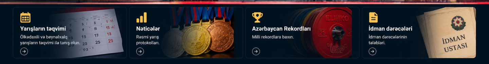
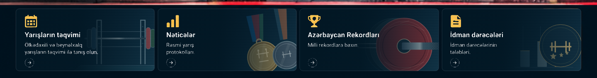

Homepage card backgrounds
Compare the current cards with the proposed SVG artwork. This preview is separate from powerlifting.az.


Existing Azerbaijani text, icons, card dimensions and all four links are preserved. No production deployment or V2 admin changes are included.